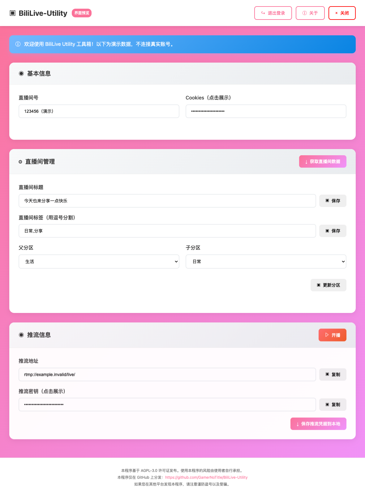

扫码登录
使用 B 站手机客户端扫码，在程序中完成登录，无需手动填写 Cookie。
登录后自动获取账号信息扫码登录、管理直播间、获取推流凭据。
熟悉的粉色界面，让每次开播准备更简单。
从账号登录到推流设置，把常用操作集中到一个桌面窗口。
使用 B 站手机客户端扫码，在程序中完成登录，无需手动填写 Cookie。
登录后自动获取账号信息获取直播间数据，修改标题、标签与分区，为下一场直播准备好内容。
标题 · 标签 · 父分区 / 子分区开启或停止直播，复制推流地址和密钥，也可以将凭据保存到本地。
配合 OBS 等推流软件使用粉紫渐变背景、白色信息卡片、熟悉的操作按钮。官网与软件，同一种风格。

前往 GitHub Releases，按操作系统与芯片架构选择版本。下载解压或安装后打开。
阅读并同意免责声明，使用 B 站 App 扫码。获取直播间数据，再按需修改标题、标签和分区。
开播成功后，把推流地址与密钥填入 OBS 等软件，并从推流软件开始推流。结束后记得停播。
选择适合你的版本，免费获取 BiliLive-Utility。
不可以。程序通过 WebView 显示操作界面，但需要配合本地程序运行；这个静态官网只提供项目介绍、下载和使用指南，不会要求你输入 B 站账号或 Cookie。
Windows 选择 Windows-amd64；Intel Mac 选择 macOS-amd64；Apple Silicon（M 系列）选择 macOS-arm64。请以 Releases 实际提供的文件为准，其他环境可参考源码启动说明。
程序负责开启直播间和获取推流凭据，画面与声音仍需 OBS 等推流软件传输。将推流地址与密钥分别填入推流软件的自定义服务器设置，再开始推流即可。
请只从本项目 GitHub 下载程序，不要分享 Cookie、登录二维码或推流密钥。平台接口与规则可能变化，本工具不保证所有账号均可开播。使用前请确认符合平台规则，并确保直播内容已获得合法授权。